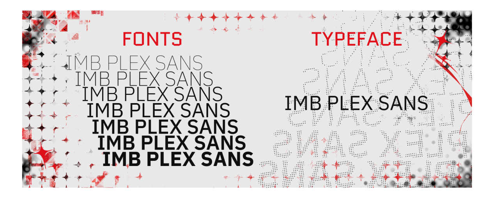
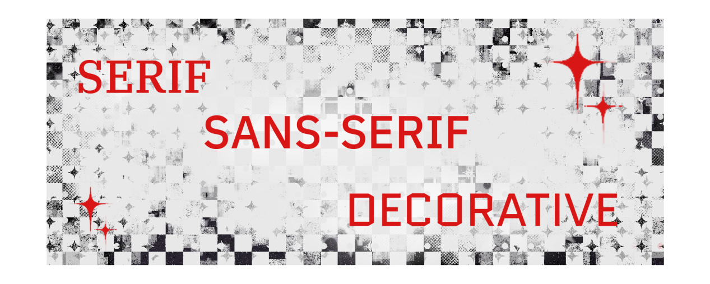
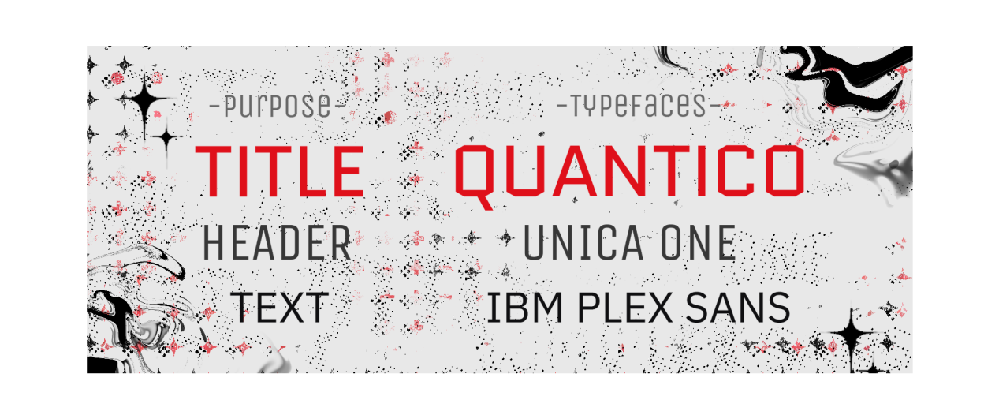
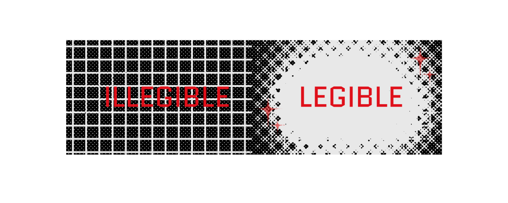

The Concepts to my DesignWEBSITE MANIFESTO |
Love
Typography is vital for communication in design. Understanding the fundamentals of type and how to choose the best typeface pairings can improve your designs dramatically. After reading this guide, choosing fonts will be a breeze.
Let’s talk about the elephant in the room first. Font vs typeface, what’s the difference? Which is correct? The terms typeface and font are sometimes used interchangeably which can be a little confusing.
A typeface is a collection of fonts while a font refers to a specific style or weight within a typeface family. So let’s put this context with an example. Helvetica is a typeface. But Helvetica Bold is a specific font within the Helvetica typeface family. Here’s a visual example so you can see the difference between a typeface and fonts.

Now that we understand what a typeface and a font are, what is typography? Typography is the art and technique of arranging type. Whether you’re designing a website, an app, or a poster, you’re using type to deliver a message.
Typography serves two main purposes. The first is it must be legible. Can a user read and understand it? The second is how you use typography to create a mood or design aesthetic to attract a specific audience.
Learning the fundamental rules of type, so you can break them later, will help you become a better designer. It just takes practice and a little knowledge. If you want to learn more about type and how it relates to design, check out this article What is typography?
In order to know how to choose fonts, we need to understand the various categories of type, the characteristics of each, and recommended usage. In this guide, we’ll refer to three different categories of type when choosing font pairings.

A serif is a small line or stroke attached to the end of a larger stroke, often referred to as the “feet” shown at the bottom of letters. Not all serifs are equal. Some have slight variations depending on the typeface and that is part of what makes them unique. An advantage of using serif typefaces is how many font weights they usually have within a family. One serif family might have a regular, italics, semi bold, semi bold italic, bold, bold italic, small caps, and more.
Serif typefaces are more formal and traditional. They’re often used editorially such as in newspapers, magazines, and the body copy of books. One of the most well-known serif typefaces and probably the first font you ever used on a computer is Times New Roman.
Sans serif typefaces do not have serifs (the French word sans, means “without”). These typefaces are more modern, bold, and great for eye-catching headlines. One of the most popular sans serif typefaces is Arial which is a copycat of Helvetica. Our main brand fonts here at Flux are two san serif typefaces.
This category of typeface should be used sparingly, most for titles and headlines. It can range from scripts to monotype, and anything in between. These are a great way to add character to your design but should be avoided for long paragraphs of body copy as they can be difficult to read.
We’ve discussed what typography is as well as some of the main categories of type, now let’s dive into tips for how to choose the best fonts.
An important part of the design process is research and inspiration. One of my favorite places to find design inspiration is on Pinterest. Let’s say I’m working on designing a poster to advertise an event. On Pinterest, I searched for “bold poster design” and this is what I found. There’s a lot of fun typefaces that might inspire the next one you use for your design.
No matter what you are designing, you should have a main font. When it comes to web design, most likely this will be used in your title or headline text. It’s meant to be an accent, to stand out, and influence the mood of your design. It doesn’t really matter what type of font it is, but knowing the first one will help you choose your second.
Now that you have a main font for your design, the best way to choose a good secondary font is to make sure it’s dramatically different yet complements the design. You wouldn’t want to choose two serifs that look similar, there is no contrast and in fact, it looks like a design mistake. Take a look at this example, these are two different serif typefaces but it’s difficult to tell.
One of these ways to choose fonts is to choose a pair of opposites. A good example of this is to use a big and bold serif for your headline and a nice traditional serif typeface for the body copy. Take a look at this example, to see this tip in action.
Another tip is to think about the width of the typeface and how they complement each other. For example, maybe you want to pair a condensed sans serif typeface with a wider san serif. While they are both the same category of type, they vary in contrast due to their width. Take a look at this example for inspiration.
Just like choosing a color palette, it can be easy to get carried away with all the options available to use for your design. A good general rule is to stick to about 2–3 different typefaces total for a design. Now of course this might vary depending on what you are designing but it’s a good rule of thumb.

You want to choose typefaces that stand the test of time. Be wary of trendy or pxopular typefaces that you see everyone else using. If you choose something too niche or close to the times when designing a logo, for example, you’ll find yourself having to redesign it after a few short years. To avoid your design becoming outdated, include classic and well-known typefaces. Check out this fun article on 25 classic fonts that will last a whole design career.
Choosing colors is an important part of the web design process that can make or break the final result. In this guide, we'll review color theory and psychology fundamentals and lay out a step-by-step process for creating color palettes for websites.
If you're a web designer who struggles to create color schemes for websites, you're not alone. Choosing colors may seem intuitive, but in fact there's a lot of strategy that goes into creating effective color palettes. Everyone has subjective opinions on different colors--some people love bold, bright colors like cherry red and neon green, whereas others gravitate towards soft pastels. The challenge for web designers is to look past their subjective views, and those of their clients, in order to choose colors strategically.
Fortunately, there are certain principles and methods that help make color choice a breeze for web designers. In this guide, we'll teach you how to take the guesswork out of choosing colors for your web design projects. First, we'll review the fundamental color theory and psychology principles every designer needs to know. Then, we'll spell out a simple 3-step process that’ll help you choose colors for websites like a pro.
You may be wondering: is color choice really that important for a website? The answer is a resounding yes. Good color choice promotes legibility, visual appeal, and brand recognition. Bad color choice, on the other hand, creates a poor user experience. As we all know, a poor user experience spells disaster for a business website.
Color choice helps determine whether the content on a page is readable. Legibility is optimized with an appropriate level of color contrast between the text and the background. Too little contrast makes the text hard to read; too much contrast is hard on the eyes. A classic example of color contrast is black text on a white background. If you look closely, you'll notice that many websites actually use dark grey text on a white or off-white background in order to maximize legibility while minimizing eye strain.

When referring to visual appeal in web design, we're not talking about subjective color opinions. Instead, the emphasis is on creating harmonious color palettes that are easy on the eyes. Choosing colors that have broad visual appeal requires an understanding of color theory. As we'll discuss in more detail later on, there are three types of color schemes that have universal appeal: monochromatic, complementary, and analogous. Recognizing and knowing how to create these color schemes makes choosing colors for websites easier and more effective.
A color scheme is a harmonious combination of colors. The three main types of color schemes designers should know about are monochromatic, complementary, and analogous. You could think of these schemes as sort of like templates for choosing colors. Let's look at each one in more detail.
Monochromatic color schemes are based on a single hue ("mono" means one). Hues are primary and secondary colors, like red, yellow, and green. To create a monochromatic color scheme, you'd pick a hue, for instance blue, and use tints, shades, and tones to create a harmonious palette. Monochromatic colors tick the box for visual appeal, but be careful to create enough contrast for legibility.
Complementary color schemes consist of colors on opposite ends of the color wheel. For example, red and green or blue and orange. Complementary colors tend to contrast well and are therefore a popular choice for web design. However, the contrast can be striking and should therefore be used intentionally in order to ensure that the colors aren't too distracting.
Analogous color schemes are made of colors that sit next to each other on the color wheel. These color schemes are inherently visually appealing, but as with monochromatic color schemes, be careful to create enough contrast for legibility. A tip for using an analogous color scheme on a website is to pair it with a neutral color like black or white in order to improve readability.
Now that we've reviewed the fundamentals of color theory and psychology, we're ready to put what we've learned into practice in order to create strategic color palettes for websites. Aesthetics are certainly important in the web design world; but a pretty color palette that's thrown together without intention or strategy won't serve anyone.
The best place to start when creating a color palette is with the primary color. A palette's primary color is the star of the show. If we follow the 60/30/10 rule, the primary color takes up about 60% of the color on a website.
When choosing a strong primary color, it's helpful to consider two things: color psychology and context. Reference the color meanings listed above to determine which color best conveys the emotions that users should feel when they land on the website. Should they feel calm or excited? Free or secure? Curious or protected? Don't forget to consider context; relying too heavily on common color associations can be detrimental out of context.
Once you've chosen a primary color, select one or more secondary colors. According to the 60/30/10 rule, secondary colors take up about 30% of a website. In order to choose secondary colors, you'll need to first determine which type of color scheme is best for the website: monochromatic, complementary, or analogous.
Color psychology can play a role here as well. Soft, muted colors convey a totally different look and feel from bright, vivid colors. A monochromatic blue color scheme might appear calming and soothing; but a complementary blue and orange color scheme could look playful and exciting.
Pro tip: Use an interactive color wheel tool like
Last but not least, every color palette should include an accent color. This color is used sparingly, taking up about 10% of real estate on a website. Often, the accent color contrasts strongly against the primary color. This contrast helps the accent color stand out and draw attention to important elements on the page, for instance buttons.
The term "accent color" typically calls to mind vibrant colors like teal or orange. But note that black and white are considered colors as well and can be used effectively as accent colors, especially on more colorful websites.